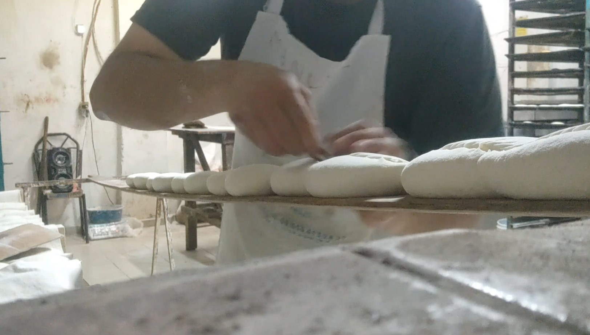

Lo que comenzó como un negocio pequeño y local en Obregón, ahora se ha convertido en una panadería bien puesta y con productos bonitos, buenos y baratos

Creemos que tras tantos años ha sido momento de dar otro paso adelanto y continuar con este legado de varias generaciones. Panadería Alondra es y seguirá siendo un negocio familiar el cual se esfuerza por dar el mejor servicio y productos.
La primera mordida es la más importante
1. Página Principal
2. Objetivo
3. Desarrollo
4. Conclusiones
5. Bibliografía
6. Productos